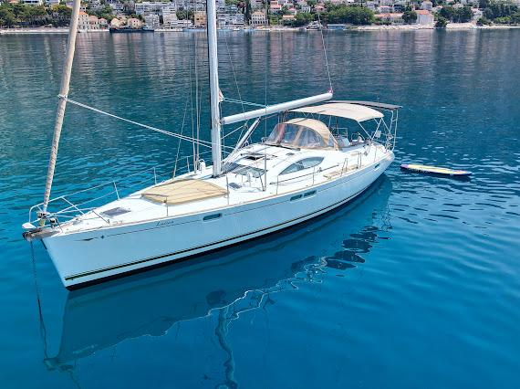
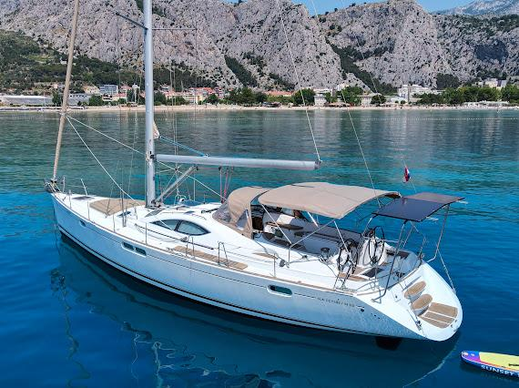
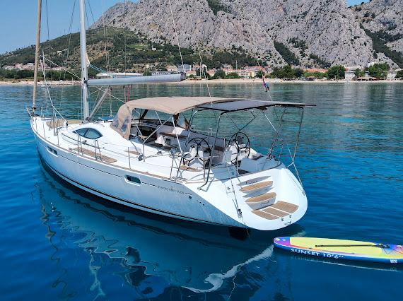

14 photos



The perfect end to your day. A 2-3 hour escape with a light breeze, a glass of your favorite drink, and a breathtaking sunset. Secure your spot on deck!
There can be multiple options for final route planning.
Lučica Sailing Yacht (meeting buoy near the bridge) — board yacht Lučica. Safety briefing and welcome aboard.
Raise the sails and head out along the Omiš Riviera. Enjoy warm evening light and coastal views.
Anchor in a secluded bay for a refreshing swim in crystal clear waters.
Sail into the sunset with spectacular views over the Adriatic and the Dalmatian coast.
Return to Omiš marina as the evening ends — unforgettable sunset memories.
Times are approximate and may vary based on weather conditions and group preferences. The itinerary can be customized to your wishes.
Swim in some of the clearest waters in the Mediterranean
Discover secluded beaches inaccessible by land
Experience true sailing, not just motor cruising
Learn about local history and the best spots from your skipper
Lučica Sailing Yacht — departure point for all tours
All tours start at Lučica Sailing Yacht near the bridge.